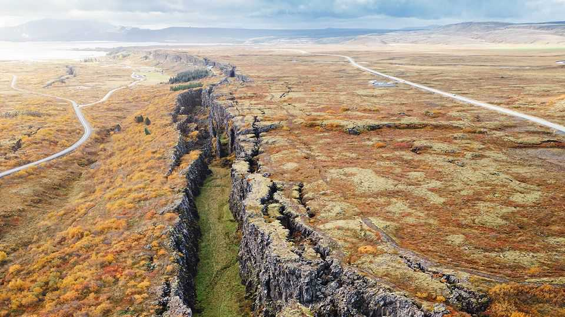

Donald Trump’s Arctic threats are pushing Iceland towards Europe
The island is voting on whether to restart EU membership talks

Aug 6th 2026
Iceland sits on the geological boundary between North America and Eurasia, equidistant from New York and Athens. It is tied to America by long-standing defence arrangements and hosts a NATO base in Keflavik. It is linked to Europe by history (it won independence from Denmark in 1944) and commerce (it belongs to the European Economic Area). Now, amid transatlantic tension and concerns about Donald Trump’s intentions in the Arctic, the country is about to vote on whether to take a step closer to the European Union.
On August 29th the island of 400,000 people will hold a referendum on whether to restart membership talks with the EU. Iceland began these nearly two decades ago, but ended them in 2013 after electing a Eurosceptic government. Voting yes will not commit the country to joining the EU; another vote would take place when talks conclude. Yet the pro-European camp is worried. Two polls in June and one in July showed a majority of just 52-53% for restarting talks. That lead is too close for comfort and could easily be reversed.
Weak Euro-enthusiasm appears to fly in the face of today’s geopolitics. Iceland does not have its own armed forces. It relies on rotating air-force deployments from NATO countries to Keflavik. With only coastguard ships at its disposal, Iceland leans on American and European aircraft to monitor the growing activity of Russian submarines nearby; in June a Russian spy ship was detected just outside its waters. The government worries about hybrid warfare and attacks on infrastructure.
These days such arrangements seem less solid. On a chilly day in July the NATO base in Keflavik was strangely quiet. American planes were “a little bit occupied in the Mediterranean”, said an Icelandic official. Mr Trump’s threats to annex Greenland, just 300km away, feel uncomfortably close to home.
The EU is not primarily a security club, although it does have a mutual-defence clause. For a small country, however, the union offers collective support against bullying over territory or trade. After Mr Trump’s threats to Greenland, which is an autonomous Danish territory, several EU countries sent symbolic detachments of troops at Denmark’s request. France’s president, Emmanuel Macron, flew to Greenland to show support. “When trade and tariffs have been weaponised,” says Thorgerdur Katrin Gunnarsdottir, Iceland’s pro-European foreign minister, “we should at least as a small nation consider where we secure our interests…For us it was important to see how steadfast the European Union stepped in.”
In recent weeks, however, anti-EU campaigners have stepped up their efforts. They are a motley coalition of hard-left and hard-right nationalists, as well as conservatives, backed by the country’s big fishing-industry lobby and media interests. In a fiercely independent country, they draw on long-standing worries about protecting fishing waters and agriculture, as well as submitting to the EU rulebook. But the debate has hardened. False claims abound. One is that this is a referendum on joining the EU; another, that Icelanders would have to join a European army.
For the EU, the prospect of a new recruit on the north-western periphery is welcome. Unlike applicants to the union’s south and east, Iceland has an income per head well above the EU average, and much of the accession homework has already been done. The European Commission has said there is “room for flexibility” on fishing rights. Yet European leaders are treading carefully to avoid any hint of interference. When Jean-Noël Barrot, France’s foreign minister, visited Reykjavik on July 20th (in part to discuss security co-operation), he declared cautiously that “the Icelandic people have nothing to lose by opening negotiations.” The choice about joining, he stressed, would come later.
A no vote would nonetheless be a symbolic blow. “We haven’t known anything except security protection by the US,” says Bogi Agustsson, a veteran Icelandic broadcaster. “A lot of people in the country are in a state of denial and don’t yet see Europe as a security alternative.” ■